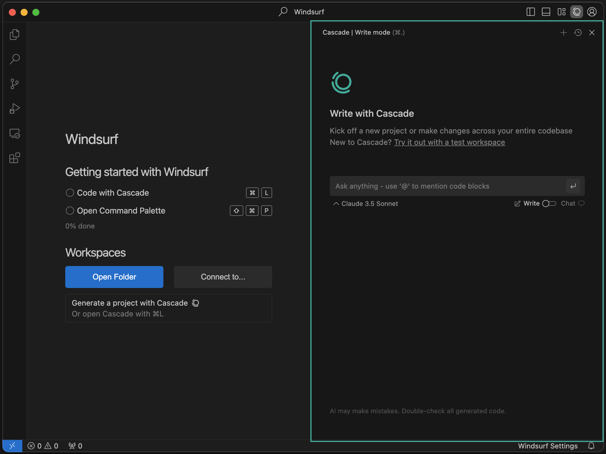

Complete Workflow Guide
AI-Powered Development Journey
This guide outlines the complete workflow for building projects using Windsurf, GitHub, and Netlify. Follow these steps to maximize your productivity and create impressive web applications.
Phase 1: Project Setup
1
Create a New Project in Windsurf
Start by opening Windsurf and creating a new project:
- Launch Windsurf and click "New Project"
- Choose a project name and location
- Select a template or start from scratch
- Initialize with Git (this will make GitHub integration easier)

2
Connect to GitHub
Link your local project to GitHub for version control:
- Create a new repository on GitHub
- In Windsurf, open the Windsurf AI assistant
- Ask: "Help me connect this project to my GitHub repository at [YOUR-REPO-URL]"
- Follow the instructions provided by Windsurf AI
Pro Tip: Initialize with a README, .gitignore, and LICENSE file to follow best practices for open source projects.
Phase 2: Development with Windsurf AI
3
Research and Plan Your Application
Use Windsurf AI with Claude 3.7 Sonnet thinking model to research and plan your application:
- Open the Windsurf AI panel
- Ask Windsurf to use Claude 3.7 Sonnet for research: "Use Claude 3.7 Sonnet thinking model to research modern portfolio website design patterns"
- Then ask for help planning the structure: "Based on this research, help me plan the file structure and components for a personal portfolio with projects, about me, and contact sections"
- Review and refine the plan with Windsurf AI
Pro Tip: Claude 3.7 Sonnet provides more thorough research capabilities. Always specify this model when you need in-depth information or analysis.
4
Build Your Application
Leverage Windsurf AI to help you code efficiently:
- Create the basic structure based on your plan
- Use Windsurf AI to generate code for specific components
- Example prompt: "Create a responsive navigation component with links to Home, About, Projects, and Contact"
- Have Windsurf AI explain any complex code it generates
- Test your components as you build them
Pro Tip: Make small, incremental changes and commit them often. This makes it easier to track progress and revert if needed.
5
Regular Commits to GitHub
Maintain a clean Git history with meaningful commits:
- Stage your changes:
git add . - Create a commit with a descriptive message:
git commit -m "Add responsive navigation component" - Push to GitHub:
git push origin main - Alternatively, use the Windsurf AI to help with Git operations: "Commit my changes with a message describing what I've added"
Phase 3: Deployment with Netlify
6
Connect GitHub Repository to Netlify
Set up continuous deployment with Netlify:
- Log in to Netlify and click "New site from Git"
- Select GitHub and authorize Netlify
- Choose your repository from the list
- Configure build settings (if needed)
- Click "Deploy site"

7
Configure Custom Domain (Optional)
Personalize your site with a custom domain:
- In Netlify, go to "Domain settings"
- Click "Add custom domain"
- Enter your domain name and follow the steps to verify ownership
- Update DNS settings as instructed by Netlify
- Enable HTTPS for your site
Phase 4: Continuous Improvement
8
Implement Feature Branches
Use branches for new features and improvements:
- Create a new branch:
git checkout -b feature/add-contact-form - Develop and test your new feature
- Commit changes to the feature branch
- Push to GitHub:
git push origin feature/add-contact-form - Create a pull request on GitHub
- After review, merge the feature into the main branch
Pro Tip: Netlify can be configured to create "deploy previews" for pull requests, allowing you to see your changes live before merging.
9
Optimize Your Site
Use Windsurf AI to help optimize your application:
- Ask Windsurf AI to analyze your code for performance improvements
- Request suggestions for accessibility enhancements
- Optimize images and other assets
- Implement SEO best practices